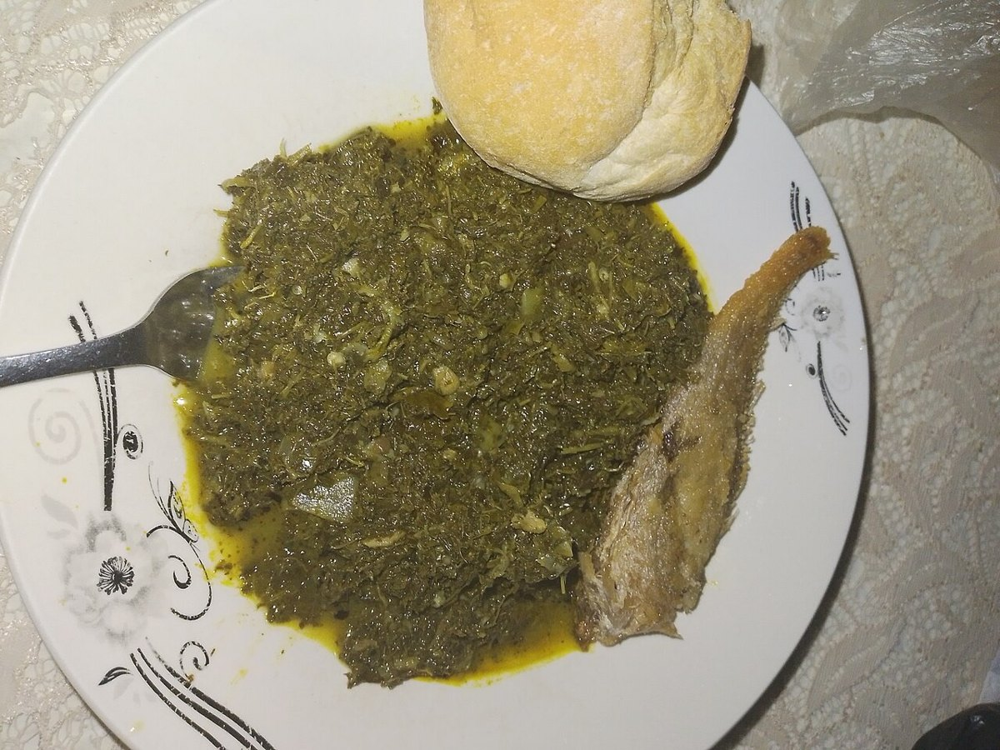
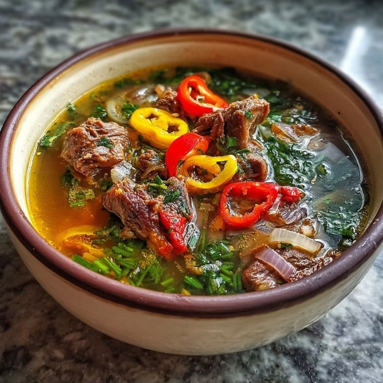

RD Congo
Foglie di manioca pestate cotte lentamente con olio di palma, cipolla e pesce salato.


← Torna alle ricette

 RD CongoFumbwa
RD CongoFumbwa NigeriaZuppa egusi con fufu
NigeriaZuppa egusi con fufu